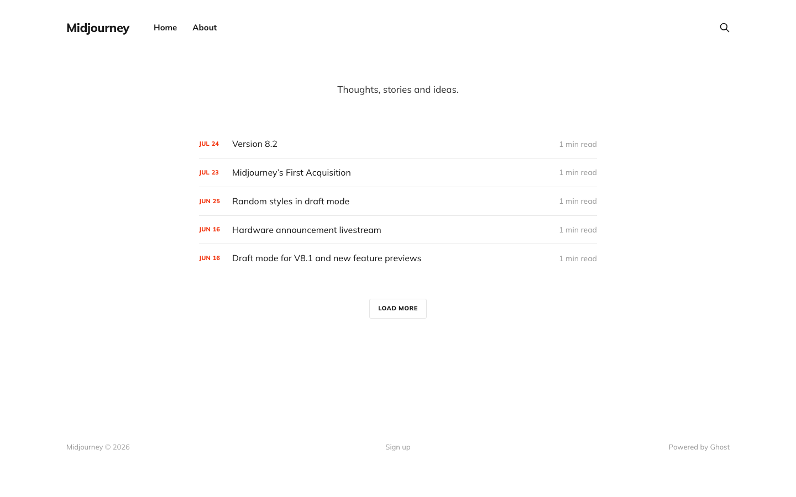
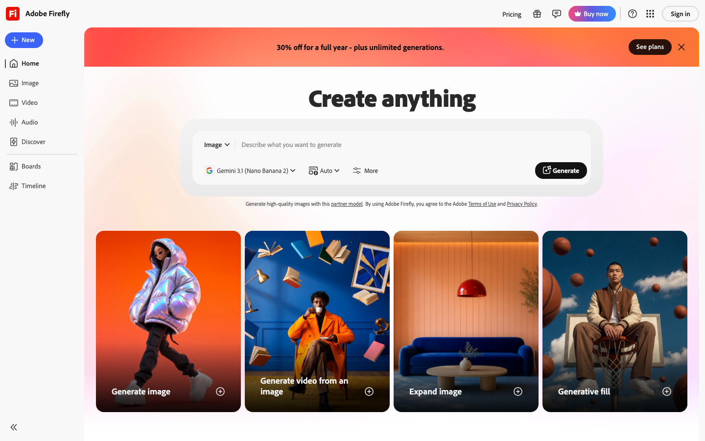
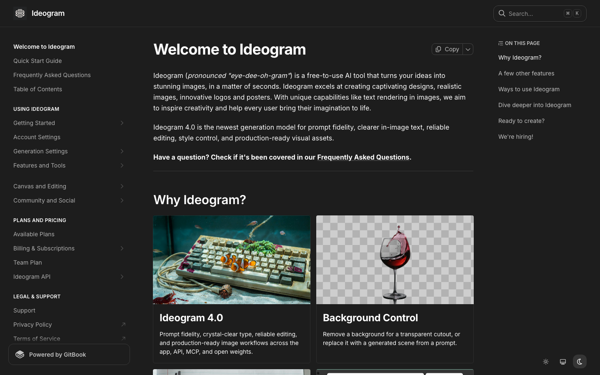
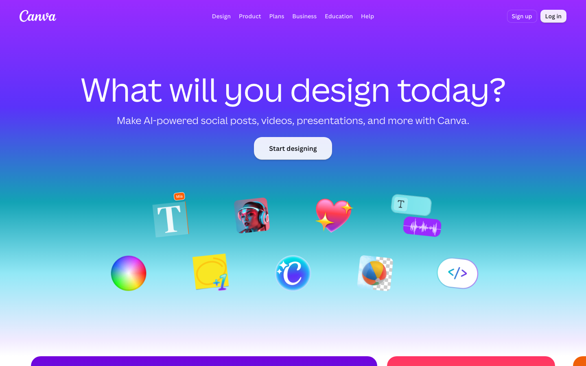

AI IMAGE / 比較ガイド
AI画像生成サービス比較｜Midjourney・Adobe Firefly・Ideogram・Canva【2026年】
画像生成AIは、作品の世界観を作るのか、商用素材を編集するのか、画像内の文字まで整えるのかで選択が変わります。公式料金・クレジットと日本語を含む国内外レビューを突き合わせ、本文を読み込まなくても候補を絞れる形にしました。
- 世界観・広告：Midjourney。Basicは月10ドル、Standardは月30ドルで画像Relax無制限。自由度の代わりに操作を覚える必要があります。
- 商用素材・Adobe：Adobe Firefly。Standardは月9.99ドル・2,000 creditsで、5秒動画は最大20本相当。Adobeを使わない単体用途では優先度が下がります。
- 文字入り画像：Ideogram。Plusは月20ドル・1,000 priority credits。ロゴや見出しを含むバナーに向き、無料枠は低速です。
- デザイン運用：Canva。Proは年額144ドル表示で月額換算12ドル。画像生成後のテンプレート・ブランドキット・配信まで同じ場所で進められます。
料金・credits・コスパ比較（2026年8月2日時点）
価格は公式の米ドル表示です。画像生成はモデルや画質ごとに消費量が変わるため、公開されているcredits・GPU時間・AI allowanceを同じ表に並べ、単位が揃わない箇所は算定不能と明示します。
比較シナリオ：月に広告用の静止画を100枚、文字入りバナーを20枚作る小規模チームを想定します。単価だけでなく、生成後の編集・ブランド管理・商用利用まで含めて判断すると、サービスの役割が分かれます。
| サービス（公式） | 代表プラン・月額 | 含まれるusage | 実効コスト | コスパの結論 |
|---|---|---|---|---|
| Midjourney | Basic $10/月、Standard $30/月 | Basic 3.3 Fast GPU時間、Standard 15時間＋画像Relax無制限 | BasicはGPU時間あたり約$3.03。画像1枚への換算式は公開情報だけでは算定不能 | 反復して世界観を作るなら強い。短期の少量制作では余りやすい |
| Adobe Firefly | Standard $9.99/月、Pro $19.99/月 | Standard 2,000 credits、5秒動画最大20本相当。画像の標準機能は無制限 | Standardは5秒動画換算で約$0.50/本 | Adobeユーザーなら追加ツールを減らせる。creditsを動画へ使うと消費が速い |
| Ideogram | Plus $20/月、Pro $60/月 | Plus 1,000 priority credits、2a Turboで最大8,000画像相当 | priority creditあたり約$0.02。実画像枚数はモデルで変わる | 文字入り素材の失敗を減らす価値が高い。大量の写実素材には割高 |
| Canva | Pro $144/年（$12/月換算）、Business $250/年/人 | ProはStandard最大2,000回、Premium最大200回、Ultra最大20回の月次目安 | Proは月$12換算。AIの種類を混ぜると使用回数は下限寄り | 画像・資料・SNSを同じブランドで回すほど有利 |
MidjourneyとIdeogramは生成モデルごとの画像単価が一定でないため、月額を画像枚数で割った数字は出しません。公開単位を守って比較することが、予算超過を避ける近道です。
4サービスの実力と口コミ

Midjourney：世界観を作り込む画像生成
G2の利用者レビューでは、同じ方向性のバリエーションを素早く出せることと、モデル更新による表現の広さが評価されます。一方、Discordを起点にした操作や設定の理解に時間がかかるという声もあります。広告のキービジュアル、ブランドのムードボード、コンセプト探索のように「正解を一枚で出す」より「候補を並べて選ぶ」仕事で価値が出ます。

Adobe Firefly：商用制作へつなぐ生成
Adobe公式は、Fireflyモデルの商用利用とContent Credentials、PhotoshopやExpressとの連携を打ち出しています。G2とTechRadarの傾向でも、既存のAdobeファイルへ生成素材を入れやすいことが評価されます。反対に、単体の画像生成だけで作風を追い込む用途ではMidjourneyほどの自由度を求めにくく、動画や音声へcreditsを広げると消費管理が必要です。

Ideogram：文字入りバナーとロゴ案
独立レビューでは、画像の中へ見出しや短い日本語を入れる作業で候補に挙がります。Plus以上は非公開生成と商用利用が可能で、バナー・ポスター・キャンペーン案を早く並べられます。priority creditsは月次で消費されるため、文字のない素材を大量に出す用途ではCanvaやFireflyの方が運用しやすい場合があります。

Canva：生成後のデザイン・配信まで
G2の解説やTechRadarの報道では、テンプレート、ブランドキット、SNS・資料・印刷物まで一つの環境で扱える点が評価されます。Redditでは、短い投稿を量産しやすい一方、同じテンプレート感が出やすく、大量の細かな修正では重さを感じるという傾向があります。生成画像を使った施策をすぐ公開物へ落とすチームに向きます。
強み・弱み比較表
| サービス | 強み | 弱み | 向く人 | 向かない人 |
|---|---|---|---|---|
| Midjourney | 世界観、反復、作風の幅 | 操作の学習、画像枚数の単価換算が難しい | 広告・コンセプト制作 | 定型バナーを一枚ずつ正確に作る人 |
| Adobe Firefly | 商用制作、Adobe連携、標準生成無制限 | credits消費、単体の作風自由度 | Creative Cloud利用者 | Adobeを使わず作品だけ追い込む人 |
| Ideogram | 画像内文字、ロゴ案、非公開生成 | priority credits、写実素材の大量制作 | バナー・ポスター担当 | 文字を含まない素材の大量生成 |
| Canva | テンプレート、ブランド、配信 | テンプレート感、複雑な編集の重さ | マーケ・SNSチーム | 一枚の作風を細部まで追い込む人 |
用途別の決定ルール
Midjourney
広告の核となる絵を複数案から選ぶなら第一候補です。
Firefly
PhotoshopやExpressで仕上げる素材を増やすなら最短です。
Ideogram
日本語の見出しを含むバナー案を並べるなら強みが出ます。
Canva
生成画像を資料、SNS、印刷物へ同じブランドで展開します。
4サービスを同時契約するより、主業務を一つ決めて第一候補を選び、足りない工程だけ補助ツールで埋める方が月額を管理しやすくなります。
自社の業務へ最短経路で組み込む
画像生成の導入は、プロンプトの上手さよりも、素材の命名、ブランドルール、承認済みの利用先、公開後の反応を一つの流れにできるかで決まります。AI顧問室は、候補サービスの選定だけでなく、既存の制作・配信業務へ無理なく組み込む設計まで支援します。
- Midjourney料金 / G2レビュー
- Adobe Firefly料金 / TechRadar特集 / G2レビュー
- Ideogram料金 / Tom's Guide / Reddit傾向
- Canva料金 / G2解説 / Reddit傾向
価格・利用量・レビューは2026年8月2日に取得しました。
よくある質問
無料で試すならどれですか？
Fireflyは日次の無料生成、Ideogramは週次の低速credits、CanvaはFreeのAI allowanceがあります。世界観を試すならMidjourneyの低価格Basic、文字入りならIdeogramから始めると判断しやすいです。
商用利用を重視する場合は？
Adobeの商用向け説明とContent Credentialsを重視するならFirefly、ブランド資産を一元管理するならCanva、独自のビジュアルを作るならMidjourneyが候補です。
AI顧問室では何をしてくれますか？
制作物の種類、使う部署、公開先、毎月の量を整理し、サービス選定から業務フローへの組み込みまで支援します。